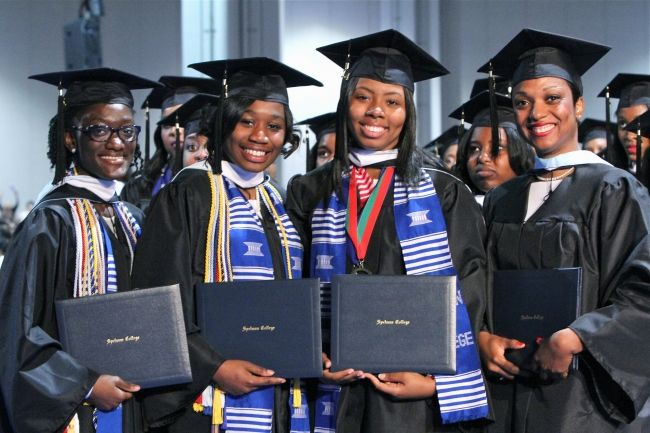

Fiona's Journey
My first week of AkiraChix was feeled with mixed emotions.It was bitter-sweet kind of emotions.A little bitter emotion because I knew I was embarking on ajourney away from my family for a whole year.Despite all thhat i was super excited to join a school which we be a bridge to achieving my dreams.I still remember my first step inside the AkiraChix compound,i was welcomed by extra friendly faces which was something not so much expected in a school.I was so excited about the new things i was going to learn.We checked into our hostel and i was even more surprised to realize i had fellow students from different ethnicities.
The admision was quite simple and easy for me as I had so much help from the former students.The staff too was so friendly and i must say it so easy to settle and not feel homesick There are so many things i was learning already about AkiraChix. The most valuable lesson i'm learning each day is to bre selfdriven,accountable and hardworking each day as the sun rises.some of the things i love most include:We are all driven by innovative principles.My end goal is to graduate with flying colours.
However there also exists things that have not been so good have been:
With all these experiences i'm hoping to create the best version of myself from AkiraChix.I want to be part of africanwomenintech.com.